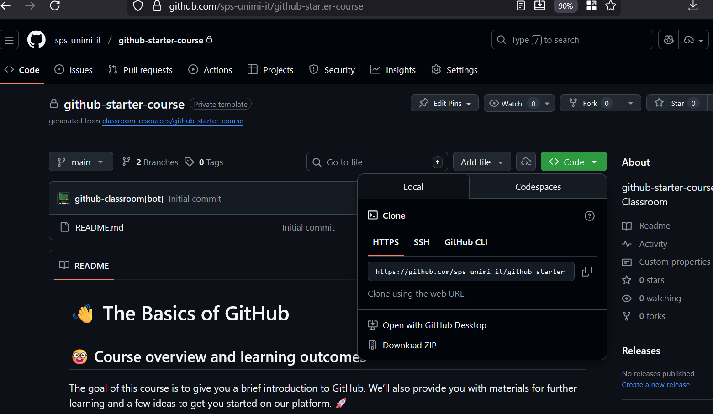

Main commands
More than one copy of the repo can be cloned in different parts of the same computer
We often read of data-driven Social science analyses
Let’s replicate such studies with our own coding
and, possibly, use it as a base for further discoveries
Can you convincingly replicate the findings of
Chan et al., Four best practices for measuring news sentiment using ‘off-the-shelf’ dictionaries: a large-scale p-hacking experiment
Comp. Communication Res., 2021
code is available at github.com/chainsawriot/ots
N.B. not all findings need replication: precise instructions will follow
Operations will be on GitHub: sps-unimi-it-c4css-2025-26
correctness (syntactical & semantical)
code quality: is it clear? Is it easy to reuse/maintain?
presentation: graphics etc.
veracity: can the student explain their code line-by-line?
coding is not even half of the story
debugging requires deep understanding of
maintaining also takes time
Regression: it used to work but not anymore
Git supports collaboration in software
the codebase is centralised and receives contributions
one can branch a codebase to develop and test ideas.
More than one copy of the repo can be cloned in different parts of the same computer
reads a ‘secret’ .git folder inside the top folder of the repo
from now on, also newfile.py will be versioned
what has been changed since the last version?
cristallises a new version
update the codebase to my current version
To protect the codebase, destructive updates are treated by creating a branch
Proceed with caution…
A cloud platform to support collaborative coding
in principle, all code is public
We can clone, make changes, commit them in our local repository then send a pull request to the owner of the repo for our changes to be incorporated.
Knowing Git/GH is a critical skill today
A GH portfolio speak for our skills
GH Classroom helps learning by
Try the starter course:
The following material is from the GitHub Classroom admin pages
instructor will share a link like:
https://github.com/sps-unimi-it/c4css-2025-26
when student clicks, it:
The repo name is usually: c4css-2025-26-yourGitHubUsername
After accepting, you’ll see a repository URL:
The repository contains:
You already know how to:
git clone - get the repository, una tantum
git pull - get updates from instructors
Now you’ll work locally, editing files in your favorite editor or IDE.
To submit your work, you need to send your changes back to GitHub.
This involves three new commands:
add - Stage your changescommit - Save a snapshot with a messagepush - Send commits to GitHubgit addselecting files to be included the next save point.
git status shows what’s staged and what’s not.
git commitA commit is like a save point in a game - it records your changes with a descriptive message.
The message should briefly describe what you changed.
Good messages:
Meh messages:
git pushThis uploads your commits from your computer to GitHub.
That’s it: the new version now visible to the instructors
N.B. submitting = the last push before the deadline
# Make changes to your files in your editor
# Then in terminal:
git status # See what changed
git add solution.py # Stage the file
git commit -m "Add solution to problem 1"
git push # Upload to GitHub
# Continue working...
git add tests.py readme.md
git commit -m "Add tests and update readme"
git pushCommit Often - Make small, logical commits - Don’t wait until everything is done
Push Regularly - Backup your work to GitHub - Avoid last-minute technical issues
Write Clear Messages - Helps you track your progress - Helps instructors understand your work
Getting instructor updates:
Made changes but want to see status:
Forgot to push before deadline?
commits are timestamped locally
push ASAP and notify instructors
“Your branch is behind…” - Someone else pushed changes - Run git pull first, then push
Forgot to commit? - Your changes are local only - git add and commit before pushing
Need help? - Check git status for hints - Ask your instructor or TA - GitHub Classroom interface shows submission status
After pushing, visit your repository on GitHub:
https://github.com/sps-unimi-it/c4css-2025-26-yourname.git
see all your files and chronology of commits
check the timestamp of your last push
read instructors’ feedback (in Issues or PR comments)
Key points: